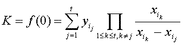

This well-known threshold scheme was discovered in 1979 by Adi Shamir. It's a form of secret sharing that is based on polynomials over finite fields.
Threshold t is the number of shares needed to successfully reconstruct the secret. n is the number of participants an p is a prime that has to be bigger than the number of participants and the secret K to be shared among them.
To set up a Shamir scheme, the dealer has to go through the following steps:
To reconstruct the secret, at least t participants have to cooperate. First, these participants have to transfer their shares to the combiner. Now he is the one who not only knows all public values, but t secret values, too. As a result, he is able to compute the secret by using a simplified version of LaGrange formula for interpolating polynomials:
